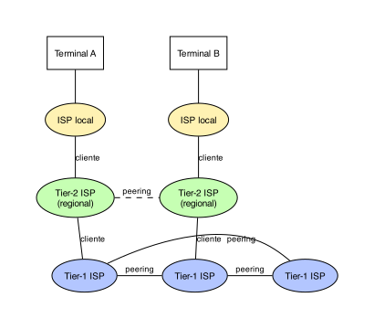
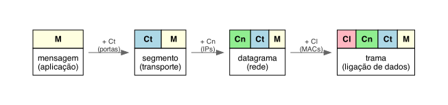
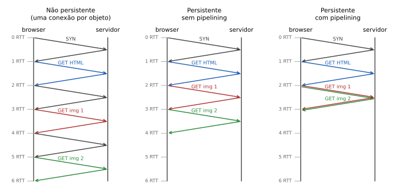
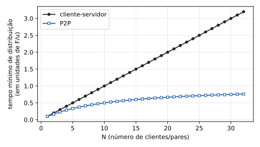

Gerado a partir do resumo de Redes (Capítulos 1 e 2). As dicas do quiz trazem-te diretamente à secção onde está a teoria de cada pergunta.
O sinal † marca matéria que não está nos slides mas faz falta para as práticas. Os exercícios estão no resumo em PDF e no site de soluções.
Aula 1 — Introdução às redes de comunicação
O que é a Internet
Visão estrutural. A Internet é composta por:
- terminais (hosts, end systems): PCs, servidores, telemóveis e, cada vez mais, objetos (IoT). Todos correm aplicações em rede;
- ligações (links): fibra, cobre, rádio, satélite. Cada uma tem uma taxa de transmissão (capacidade, ou “largura de banda”), em bits por segundo;
- routers: reenviam pacotes, encaminhando-os para o destino.
Uma “rede de redes”: redes independentes interligadas, organizadas de forma vagamente hierárquica. Distingue-se a Internet pública das intranets privadas, que usam a mesma tecnologia mas não estão acessíveis (ou só de forma restrita) a partir da Internet pública.
A comunicação é regida por protocolos (TCP e IP para o envio e receção de pacotes, HTTP para a Web, Ethernet numa rede local), definidos em RFC (Request for Comments) pelo IETF (Internet Engineering Task Force).
Visão de serviços. Para as aplicações distribuídas (Web, email, VoIP, jogos, partilha de ficheiros), a Internet é uma infraestrutura de comunicação com dois serviços: entrega fiável extremo-a-extremo (TCP) e entrega não fiável, de “melhor esforço” (best effort, UDP). Estão desenvolvidos na Aula 2.
Um protocolo define o formato das mensagens trocadas, a ordem de envio e receção entre as entidades, e as ações a efetuar na transmissão, na receção ou noutro evento (ex.: um temporizador que expira).
Protocolo humano e protocolo de rede. A diz “Olá”, B
responde “Olá”, e só depois A pergunta “Tens horas?” e B responde “São
2:00”. Um browser faz o mesmo: (1) envia um pedido de ligação
TCP; (2) o servidor responde com a resposta de ligação
TCP; (3) só então o cliente envia
GET http://www.exemplo.com/pagina.html; (4) o servidor
envia o ficheiro. Tal como entre pessoas, a ordem
importa (o GET só depois da ligação) e o
formato também (o servidor só percebe um
GET com a sintaxe certa).
Extremidade da rede (edge)
Os terminais correm as aplicações e ficam na periferia da rede. Os dois modelos de aplicação (cliente/servidor e peer-to-peer) e os dois serviços de transporte (TCP e UDP) estão na Aula 2.
A rede de acesso liga um terminal ao primeiro router (o edge router). O que interessa nela é a capacidade (partilhada ou dedicada) e a latência.
Cabo (HFC, hybrid fiber/coaxial): a infraestrutura de TV por cabo transporta também dados, com multiplexagem em frequência (FDM): canais de TV, de subida e de descida em bandas diferentes do mesmo cabo. É assimétrico (até ~30 Mbps a descer, ~2 Mbps a subir) e o cabo é partilhado pelas casas do mesmo segmento: o débito de cada casa depende de quantos vizinhos o usam ao mesmo tempo.
Fibra até casa (FTTH): ligação ótica da central até casa, com um splitter ótico passivo que divide uma fibra por várias casas (PON) ou com eletrónica ativa por casa (AON). Muito mais capacidade e alcance do que o cabo; integra telefone e TV. Na PON cada casa tem fibra dedicada até ao splitter e a partilha é mais a montante e controlada, por isso os vizinhos pesam menos do que no cabo †.
LAN Ethernet: os terminais ligam-se a um switch Ethernet (nas Ethernet antigas partilhavam um cabo), a 10 Mbps, 100 Mbps, 1 Gbps ou 10 Gbps.
Sem fios: os terminais ligam-se ao router através de um ponto de acesso partilhado. LAN sem fios (WiFi, 802.11b/g/n/ac/ax/be): de 11 Mbps (802.11b) a 46 Gbps (802.11be). WAN sem fios (operadoras): até ~300 Mbps em 4G (LTE Avançado), até 20 Gbps em 5G.
Um bit propaga-se entre emissor e recetor por uma ligação física:
- meio guiado (o sinal segue um meio sólido): par de cobre entrançado (Cat.5/5e/6/6a, de 100 Mbps a 10 Gbps de Ethernet), cabo coaxial, fibra ótica;
- meio não guiado (ondas de rádio): micro-ondas terrestres (até 620 Mbps), WiFi (até 46 Gbps), redes móveis (até 20 Gbps em 5G) e satélite. Os satélites de baixa altitude (ex.: Starlink) têm ~25 ms de latência, contra ~270 ms dos geossíncronos, mas menos capacidade por satélite (até ~220 Mbps).
O sinal vai em banda-base (um só canal ocupa todo o meio, sem modulação, como na Ethernet original em coaxial) ou modulado (o sinal modula uma portadora em frequência, amplitude ou fase, o que permite vários canais no mesmo meio, como no HFC).
Núcleo da rede (core)
O núcleo é a malha de routers que liga as redes de acesso. A questão é como se transferem os dados através dele: por comutação de circuitos ou por comutação de pacotes.
Como na rede telefónica: os recursos do percurso (capacidade das ligações e dos nós) são reservados extremo-a-extremo antes da comunicação (estabelecimento da “chamada”). Ficam dedicados, mesmo sem nada para transmitir (desperdício), e em troca o desempenho é garantido (não há congestionamento no circuito).
Os recursos dividem-se em parcelas por multiplexagem:
- FDM (Frequency Division Multiplexing): uma banda de frequência por utilizador, durante toda a chamada;
- TDM (Time Division Multiplexing): o tempo divide-se em ciclos e os ciclos em slots; cada utilizador usa sempre o mesmo slot de cada ciclo.
Tempo de transferência num circuito. Ficheiro de 640 000 bits de A para B; ligações de 2,048 Mbps com TDM de 32 slots; 500 ms para estabelecer o circuito.
1. Capacidade do circuito (1 slot em 32): .
2. Transmissão: .
3. Somar o estabelecimento, que acontece antes, em sequência: (sem contar o atraso de propagação, que se vê mais à frente).
O fluxo de dados divide-se em pacotes (dados + cabeçalho de controlo):
- sem reserva de recursos: os pacotes de todos os utilizadores partilham a rede à medida das necessidades (multiplexagem estatística: ao contrário do TDM, não há slot fixo; a capacidade vai para quem tem dados nesse instante);
- cada pacote é transmitido à capacidade total da ligação;
- há contenda: se a procura exceder a capacidade num instante, os pacotes esperam em fila e há congestionamento.
Os pacotes viajam salto a salto. Cada router tem de receber o pacote completo antes de o reenviar, o que dá, em cada salto, um atraso de transmissão de (pacote de bits, ligação de bits/s).
Cada pacote é encaminhado de forma independente: pacotes com o mesmo destino podem seguir rotas diferentes, chegar fora de ordem, perder-se ou corromper-se. Cabe às extremidades detetar e corrigir isso (é o que faz o TCP).
Store-and-forward em vários saltos. Pacote de Mbits, dois routers intermédios (3 ligações), todas com Mb/s, sem propagação.
1. Por salto: s.
2. Os atrasos somam-se: o 1.º router só começa a reenviar quando recebeu o pacote todo (aos 5 s); demora mais 5 s na 2.ª ligação; só então o 2.º router começa, mais 5 s. Os três intervalos são consecutivos.
3. Total: . Em geral, para saltos, (mais a propagação de cada ligação, se não for nula).
Pacotes vs. circuitos. A comutação de pacotes deixa mais utilizadores partilhar a rede, porque não reserva recursos que ficam parados quando um utilizador está inativo.
Ligação de 1 Mb/s; cada utilizador transmite a 100 kb/s quando ativo e está ativo 10% do tempo.
Circuitos: cada um precisa de 100 kb/s reservados sempre: utilizadores, nem mais um.
Pacotes: podem entrar muito mais, desde que seja improvável haver mais de 10 ativos ao mesmo tempo. Com 35 utilizadores, essa probabilidade é ≈ 0,0004: a rede serve 35 com a capacidade que em circuitos só servia 10.
De onde vem o 0,0004 †. Cada utilizador está ativo com , independentemente dos outros, por isso o número de ativos é binomial, : conta as formas de escolher os ativos, é a probabilidade de estarem ativos e a de os outros estarem inativos. A soma de a é ; o complementar dá . Calcula-se com calculadora ou Excel.
A comutação de pacotes é ótima para tráfego em rajadas (bursty, como a Web): partilha recursos e dispensa o estabelecimento da chamada. Mas tem congestionamento (atrasos e perdas quando a procura excede a capacidade), e por isso precisa de protocolos para a fiabilidade e o controlo de congestionamento (TCP). Dar-lhe um desempenho tão previsível como o de um circuito (para áudio e vídeo) é, em geral, um problema em aberto.
Estrutura da Internet: hierarquia de ISPs
A Internet é uma rede de redes de ISPs (Internet Service Providers), aproximadamente hierárquica:
- Tier-1: cobertura internacional, ligados “todos com todos” por ligações de peering: trocam tráfego sem pagar, porque ambos ganham;
- Tier-2: nacionais ou regionais; clientes de um ou mais Tier-1 (pagam-lhes a conectividade ao resto da Internet); alguns fazem peering entre si;
- Tier-3 e locais: as redes de acesso, clientes dos níveis acima.

Um pacote de A para B sai do ISP local de A, sobe ao Tier-2 de A, passa por um ou mais Tier-1 (se A e B não partilharem o Tier-2), desce ao Tier-2 de B e chega ao ISP local de B. A relação cliente é assimétrica (o de baixo paga ao de cima); o peering é simétrico e sem pagamento, e evita subir ao Tier-1. Por isso dois utilizadores fisicamente próximos, em ISPs sem peering direto, podem ter um caminho muito longo †.
Atrasos, perdas e throughput
Os pacotes esperam em filas nos routers quando a taxa de chegada a uma ligação de saída excede, momentaneamente, a sua capacidade. Se a fila estiver cheia quando chega um pacote, ele é descartado (perda).
As quatro fontes de atraso
Entre dois nós consecutivos:
- — processamento: verificar erros no cabeçalho e escolher a ligação de saída. Microssegundos ou menos.
- — fila de espera: a soma dos tempos de transmissão dos pacotes que estão à frente. Depende do congestionamento nesse instante (de quase zero a muito alto).
- — transmissão: ( bits do pacote, bits/s da ligação): o tempo de pôr todos os bits na ligação. Pesa nas ligações lentas.
- — propagação: ( comprimento do meio, velocidade de propagação, ~ m/s, 2/3 da luz). De microssegundos a centenas de ms (satélite geossíncrono).
Transmissão ≠ propagação †. é o tempo que o emissor demora a empurrar o pacote para a ligação: depende do tamanho e da capacidade, não da distância (o tempo de um camião a entrar todo na autoestrada). é o tempo que o sinal demora a percorrer a ligação: depende só da distância e do meio, não do pacote nem da capacidade (o camião, já na autoestrada, a chegar à saída). Um pacote grande numa ligação lenta é dominado pela transmissão; um satélite geossíncrono (~270 ms) é dominado pela propagação.
Vários pacotes e ligações em série
Com várias ligações de capacidades diferentes e vários pacotes seguidos, tudo depende de qual ligação é o estrangulamento (a mais lenta, bottleneck link).
Configuração. T1 envia 4 pacotes de bits a T2, por um router R1: ligação LAN (T1–R1) e depois WAN (R1–T2), ambas com m/s. Queremos o instante em que o 4.º pacote chega completo a T2, com :
- se (LAN é o estrangulamento):
- se (WAN é o estrangulamento):
O fator 4 vai sempre para a ligação mais lenta: nela os pacotes só podem ser transmitidos um a seguir ao outro, e o último só começa depois de os 3 anteriores saírem. Na ligação rápida não há acumulação: conta só um .
WAN como estrangulamento, com números. Mbps, Mbps, km, km, bits.
Para cada pacote : fim LAN ; chega a R1 = fim LAN ; início WAN = o máximo entre “chegou a R1” e “fim WAN do pacote anterior” (se a WAN está ocupada, espera na fila de R1); fim WAN = início ; chega a T2 = fim WAN . O início WAN do pacote 2 é máx(0,205; 1,105) = 1,105; o do 3 é máx(0,305; 2,105) = 2,105; o do 4 é máx(0,405; 3,105) = 3,105. Em ms:
| Pacote | Fim LAN | Chega a R1 | Início WAN | Fim WAN | Chega a T2 |
|---|---|---|---|---|---|
| 1 | 0,1 | 0,105 | 0,105 | 1,105 | 6,105 |
| 2 | 0,2 | 0,205 | 1,105 | 2,105 | 7,105 |
| 3 | 0,3 | 0,305 | 2,105 | 3,105 | 8,105 |
| 4 | 0,4 | 0,405 | 3,105 | 4,105 | 9,105 |
A partir do pacote 2, o início WAN já não é a chegada a R1: forma-se fila em R1, por causa do estrangulamento. Pela fórmula: , igual à última linha.
LAN como estrangulamento (capacidades trocadas: Mbps, Mbps). Agora ms, ms, ms, ms. É a LAN que acumula os pacotes; a WAN escoa-os à chegada: O valor igual é coincidência destes números; o que conta é que ligação leva o fator 4.
Intensidade de tráfego
Com a capacidade (b/s), o tamanho médio dos pacotes (bits) e a taxa média de chegada (chegadas independentes), a intensidade de tráfego (tráfego oferecido) é , a fração da capacidade pedida em média:
- : fila quase sempre vazia, espera mínima;
- : a espera média cresce de forma explosiva (não linear): uma ligação a 95% tem muito mais atraso do que a 80%;
- : chega mais trabalho do que a ligação escoa; a espera média tende para infinito (com fila finita, há perdas).
Atrasos reais: traceroute
O traceroute mede o atraso da origem
até cada router do percurso: para cada router
envia 3 pacotes que chegam até ele; o router responde à origem,
que mede o tempo de ida e volta (3 medições por salto).
Ler um traceroute (o dos slides, do
DCC/FCUP para www.cmu.edu). Cada linha tem o número do
salto, as 3 medições (ms) e o nome/IP do router.
- Os primeiros saltos (universidade, rede académica portuguesa e europeia) ficam em 1–6 ms: são próximos.
- Do salto 10 para o 11 o atraso salta de ~32 para ~102 ms: é a ligação trans-oceânica (fibra submarina Europa–EUA). Sobe a propagação (), não o processamento nem a fila.
* * * Request timed out: nenhum dos 3 pacotes teve resposta (o router não responde a estes pedidos, ou houve perdas). Não quer dizer que a rede esteja cortada: os saltos seguintes continuam a responder.
Perdas de pacotes
A fila de um router tem capacidade finita: um pacote que a encontra cheia é descartado. Um pacote perdido pode ser retransmitido pelo nó anterior (se a ligação o garantir), pelo terminal de origem (o TCP) ou não ser retransmitido de todo (tráfego UDP como vídeo em tempo real, em que chegar tarde não serve).
Débito (throughput)
O débito é a taxa a que os bits chegam efetivamente do emissor ao recetor: instantâneo (num instante) ou médio (num período). Como num tubo com troços de larguras diferentes, o débito é limitado pela ligação de estrangulamento (bottleneck link), a mais lenta do percurso, seja ela o acesso do servidor (), o do cliente () ou uma ligação no meio.
10 conexões a partilhar um backbone. Cada conexão liga um servidor com Mbps a um cliente com Mbps; as 10 partilham, de forma justa, um backbone de Mbps. Por conexão: O estrangulamento é o backbone partilhado, não os acessos.
Produto largura de banda-atraso †: , o número máximo de bits “em trânsito” na ligação, ou seja, os bits que o emissor já pôs na ligação quando o primeiro chega ao recetor. Ex.: Mbps em ~3000 km de fibra, s: Mais tarde dimensiona a janela do TCP (quanto enviar sem esperar confirmações para “encher o tubo”).
Camadas protocolares e modelos de serviço
Uma rede tem muitas peças (terminais, routers, ligações, aplicações, protocolos, hardware, software). Para tornar isso tratável, organiza-se em camadas: cada camada usa só o serviço da camada de baixo.
Analogia da roupa: fibras → fabrico das peças → design, branding e controlo de qualidade → venda a retalho → cliente. A loja não precisa de saber como se produzem as fibras, só que a fábrica lhe entrega as peças.
As camadas dão um modelo de referência para discutir o sistema (todos sabem o que é “a camada de transporte”) e modularidade: mudar a implementação de uma camada não afeta o resto, desde que o serviço que presta se mantenha.
De cima para baixo:
- Aplicação: as aplicações em rede (FTP, SMTP, HTTP).
- Transporte: dados entre processos (TCP, UDP).
- Rede: encaminhamento dos datagramas da origem ao destino (IP e protocolos de encaminhamento).
- Ligação de dados: dados entre elementos vizinhos (terminal e switch, dois routers): Ethernet, WiFi, PPP.
- Física: os sinais no meio que representam os bits.
O modelo ISO/OSI tem 7 camadas: as mesmas 5 e mais duas entre a aplicação e o transporte. A apresentação deixa as aplicações interpretar os dados (compressão, cifragem, representação de números e texto); a sessão trata de autenticação, sincronização, checkpointing e recuperação. A pilha da Internet não tem estas duas camadas: se uma aplicação precisar desses serviços (ex.: cifrar, como o HTTPS), implementa-os dentro da camada de aplicação. Por isso a aplicação da Internet não corresponde um-para-um à do OSI.
Encapsulamento
Ao descer a pilha na origem, cada camada junta o seu cabeçalho aos dados da camada de cima (encapsulamento); no destino, cada camada tira o seu antes de entregar à de cima.

Uma mensagem pela rede. A aplicação entrega a mensagem ao transporte, que junta (ex.: as portas TCP) e forma o segmento . A rede junta (os IPs de origem e destino): datagrama . A ligação junta (os endereços MAC): trama , enviada pela camada física.
Cada dispositivo só abre os cabeçalhos da sua camada. Um switch (ligação de dados) só lê para escolher a porta física; nunca vê o IP. Um router (rede) tira , lê só (o IP de destino; não olha para o cabeçalho de transporte ), escolhe a ligação de saída e volta a encapsular numa trama nova, com o da ligação seguinte. Por isso os MAC mudam a cada salto e os IP se mantêm do início ao fim. No destino, os cabeçalhos saem um a um (ligação → rede → transporte) até restar .
Aula 2 — Camada de aplicação
Princípios das aplicações em rede
Aplicações em rede: e-mail, Web, mensagens instantâneas, terminal remoto, P2P, jogos, streaming, VoIP, videoconferência, computação grid, redes sociais. Criar uma é escrever programas que correm nos terminais e comunicam pela rede. Os routers não correm aplicações (só implementam a rede e as camadas abaixo), por isso uma aplicação nova desenvolve-se e divulga-se depressa: não é preciso mudar o núcleo da rede.
Arquiteturas das aplicações
Há três: cliente-servidor, peer-to-peer (P2P) e híbridas.
Servidor: sempre ligado, com IP fixo; para escalar replica-se em vários servidores, o que tem custo.
Cliente: comunica com o servidor; pode não estar sempre ligado e ter IP dinâmico; não comunica diretamente com outros clientes. Ex.: browser e servidor Web; cliente e servidor de email.
- Não há servidores dedicados: os terminais comunicam diretamente, cada um ora cliente, ora servidor.
- Os pares podem não estar sempre ligados e mudar de IP.
- Muito escalável: cada par novo traz procura mas também oferta (serve ficheiros aos outros).
- Difícil de gerir, porque os pares são intermitentes.
- BitTorrent: um servidor central (tracker) diz que pares têm o ficheiro; os pedaços trocam-se diretamente entre pares.
- Mensagens instantâneas: as mensagens vão diretamente entre utilizadores, mas há um serviço central de presença e localização (cada utilizador regista lá o seu IP e consulta o dos contactos).
Processos, endereçamento e sockets
Um processo é um programa a correr. Na mesma máquina, os processos comunicam por IPC do sistema operativo; em máquinas diferentes, trocando mensagens pela rede. O cliente é o processo que inicia a comunicação; o servidor é o que espera ser contactado. No P2P cada processo é os dois.
O IP (32 bits) identifica a máquina, mas não chega,
porque nela correm muitos processos. O identificador é o par
(endereço IP, porta). Ex.: servidor HTTP:
80; email: 25. Um pedido HTTP a
www.dcc.fc.up.pt vai para 193.136.39.12, porta 80.
A socket é a “porta” entre o processo e o protocolo de transporte. Escrever nela é pedir ao sistema operativo que envie a mensagem; o processo assume que há uma infraestrutura de transporte que a leva até à socket do recetor. Acima da socket manda o programador; abaixo (TCP/UDP, buffers, variáveis) manda o sistema operativo. A API deixa escolher o protocolo de transporte e ajustar alguns parâmetros.
Define os tipos de mensagens (pedido, resposta), a sintaxe (que campos e como se separam), a semântica (o que significa cada campo) e as regras de quando e como os processos reagem. Os protocolos de domínio público estão em RFCs e permitem interoperação (HTTP, SMTP); os proprietários só estão acessíveis a quem o detentor quiser (ex.: Zoom).
Que serviço de transporte precisa uma aplicação
As aplicações diferem em perdas (umas toleram, como o áudio; outras exigem 100% de fiabilidade, como a transferência de ficheiros), latência (VoIP e jogos precisam de atraso baixo), débito (a multimédia precisa de um mínimo; as elásticas usam o que houver) e segurança (integridade, privacidade, autenticação).
| Aplicação | Perdas | Débito | Sensível aos atrasos |
|---|---|---|---|
| transferência de ficheiros | não tolera | elástica | não |
| não tolera | elástica | não | |
| web | não tolera | elástica | não |
| áudio/vídeo em tempo real | tolera | áudio 5 kbps–1 Mbps; vídeo 10 kbps–5 Mbps | sim, centenas de ms |
| áudio/vídeo armazenado | tolera | idem | sim, alguns segundos |
| jogos interativos | tolera | desde alguns kbps | sim, centenas de ms |
| mensagens instantâneas | não tolera | elástica | parcialmente |
Serviços de transporte da Internet: TCP e UDP
- Orientado a conexões: exige estabelecimento prévio da conexão (handshaking, que cria estado nos dois lados).
- Fiável: nada se perde (as perdas são retransmitidas) e os dados chegam por ordem, como um fluxo de bytes (byte-stream).
- Controlo de fluxo: não envia mais depressa do que o recetor processa.
- Controlo de congestionamento: reduz o débito quando a rede está sobrecarregada.
- Não tem: delineação de mensagens (a aplicação tem de saber onde acaba cada uma), garantias de atraso máximo nem de débito mínimo.
- Não fiável: os dados podem perder-se e não são retransmitidos.
- Delineação de mensagens: um datagrama é uma mensagem.
- Não tem: conexão, fiabilidade, controlo de fluxo nem de congestionamento, garantias de atraso ou débito.
Nem todas as aplicações precisam das garantias do TCP, que custam atraso (handshake, retransmissões, controlo de fluxo e de congestionamento). Numa chamada de voz, esperar 200 ms por uma retransmissão é pior do que perder o pacote, e por isso usa-se UDP †. Nenhum dos dois garante atraso ou débito.
| Aplicação | Protocolo de aplicação | Transporte |
|---|---|---|
| SMTP [RFC 2821] | TCP | |
| terminal remoto | Telnet [RFC 854] | TCP |
| web | HTTP [RFC 2616] | TCP |
| transferência de ficheiros | FTP [RFC 959] | TCP |
| streaming multimédia | HTTP (ex.: YouTube), RTP [RFC 1889] | TCP ou UDP |
| voz sobre IP | SIP, RTP, proprietários (ex.: Zoom) | tipicamente UDP |
Segurança: TLS. O TCP e o UDP não cifram: as passwords em texto claro (cleartext) ficam visíveis a quem capturar os pacotes (vê-se na captura FTP, mais à frente). O SSL/TLS junta cifragem, integridade e autenticação das extremidades (com certificados). Funciona na camada de aplicação: é uma biblioteca que a aplicação usa sobre o TCP, com uma API de sockets própria. O SSL está obsoleto, substituído pelo TLS.
Web e HTTP
Uma página web é um ficheiro-base HTML que referencia objetos (HTML, imagens JPEG, sons, vídeos…). Cada objeto tem um URL:
http://www.dcc.fc.up.pt/~rprior/photo.jpg
------ ---------------- -----------------
protocolo servidor caminhoO protocolo da Web, cliente/servidor: o cliente (browser) pede, recebe e mostra os objetos; o servidor (ex.: Apache) envia-os. Versões: HTTP/1.0 (RFC 1945), HTTP/1.1 (RFC 2068), HTTP/2 (RFC 9113), HTTP/3 (RFC 9114).
Usa TCP: o cliente abre uma conexão para a porta 80, o servidor aceita, trocam mensagens HTTP, a conexão fecha.
É stateless: o servidor não guarda nada sobre pedidos anteriores. É uma vantagem: um protocolo com estado precisa de memória para ele e, se um dos lados for abaixo, as duas visões do estado ficam inconsistentes e têm de ser ressincronizadas.
Conexões não persistentes e persistentes
- Não persistente (HTTP/1.0): um objeto por conexão TCP.
- Persistente (normal no HTTP/1.1): vários
objetos na mesma conexão. Por isso cada mensagem tem de dizer
onde acaba (
Content-Length, abaixo).
Quem decide †: no HTTP/1.0 o
servidor fecha depois da resposta, a não ser que o
cliente peça Connection: keep-alive e o servidor aceite. No
HTTP/1.1 a conexão fica aberta por
omissão (até um timeout), e quem quiser fechar envia
Connection: close (o servidor responde e fecha).
O utilizador escreve
www.dcc.fc.up.pt/~rprior/homepage/index.html (texto e 10
imagens JPEG).
- (1a) O cliente abre uma conexão TCP para a porta 80
de
www.dcc.fc.up.pt. (1b) O servidor, à escuta na porta 80, aceita e avisa o cliente. - Pela socket, o cliente envia uma mensagem de pedido com o URL do objeto.
- O servidor recebe o pedido, gera a mensagem de resposta com o objeto e envia-a pela sua socket.
- O servidor fecha a conexão TCP.
- O cliente recebe o HTML, mostra-o e encontra as 10 referências.
- Os passos 1–5 repetem-se para cada imagem.
RTT (round-trip time): ida e volta de um pequeno pacote entre cliente e servidor. Um objeto em HTTP não persistente custa 1 RTT para abrir a conexão TCP, 1 RTT para o pedido e os primeiros bytes da resposta, e o tempo de transmissão do ficheiro:
O HTTP não persistente custa 2 RTT por objeto e uma conexão TCP (com o seu overhead no sistema operativo) por objeto. Os browsers compensam com várias conexões TCP em paralelo.
O servidor deixa a conexão aberta e os pedidos seguintes usam-na.
- Sem pipelining: um pedido novo só depois da resposta anterior: 1 RTT por objeto referenciado.
- Com pipelining (o padrão do HTTP/1.1): cada pedido sai logo que se encontra a referência: 1 RTT para todos os objetos referenciados.
1 HTML + 10 imagens, ignorando o tempo de transmissão:
- Não persistente, em série: .
- Persistente sem pipelining: 2 RTT até ao HTML (conexão + pedido), depois 1 RTT por imagem: .
- Persistente com pipelining: 2 RTT até ao HTML, e os 10 pedidos seguem juntos, com as respostas ao fim de mais 1 RTT: .
Com tempo de transmissão por objeto soma-se nos três casos (os objetos passam todos pela mesma ligação). A figura mostra 1 HTML + 2 imagens (6, 4 e 3 RTT):

Formato das mensagens HTTP
Há mensagens de pedido e de resposta, ambas em ASCII.
GET /~rprior/index.html HTTP/1.1 <- linha de pedido
Host: www.dcc.fc.up.pt <- linhas de cabeçalho
User-agent: Mozilla/4.0
Accept: text/html, */*;q=0.9
Accept-language: pt
<- linha vazia: fim da mensagemLinha de pedido (método URL versão + CR
LF); cabeçalhos (nome: valor + CR LF, um
por linha); linha vazia (CR LF extra, fim dos
cabeçalhos); corpo opcional (ex.: no
POST). No HTTP/1.1 o Host: é
obrigatório (o mesmo IP serve vários sites); sem ele vem
400 Bad Request. No 1.0 é opcional †.
HTTP/1.0: GET (pede um recurso), POST (envia dados para processar, no corpo), HEAD (pede só os cabeçalhos da resposta). HTTP/1.1 junta PUT (upload de um ficheiro para o URL) e DELETE (apaga o ficheiro do URL).
HTTP/1.1 200 OK <- linha de estado
Date: Thu, 06 Aug 1998 12:00:15 GMT <- cabeçalhos
Server: Apache/1.3.0 (Unix)
Last-Modified: Mon, 22 Jun 1998 ...
Content-Length: 6821 <- para saber onde acaba a mensagem
Content-Type: text/html
<- linha vazia
dados dados dados ... <- o objeto (ex.: o ficheiro HTML)A linha de estado tem o código e a descrição:
200 OK (o objeto vem a seguir); 301 Moved
Permanently (novo URL no Location:); 400
Bad Request; 404 Not Found; 505 HTTP
Version Not Supported.
Content-Length: numa conexão
persistente as respostas seguem umas atrás das outras e o TCP
não delimita mensagens. O cliente lê os cabeçalhos até
à linha vazia e depois exatamente Content-Length bytes (ou
usa Transfer-Encoding: chunked †): aí começa a resposta
seguinte.
Uma sessão HTTP real
Os slides sugerem experimentar o HTTP à mão com
telnet (ligar à porta 80 e escrever o pedido) ou ver o que
o browser envia com o Wireshark. A captura do professor
está em Teoricas/Aula_03_captura_http.cap.
O telnet como cliente TCP genérico †. O
telnet é o cliente do protocolo TELNET
(RFC 854, porta 23) de terminal remoto: abre uma linha
de comandos numa máquina remota
(telnet <máquina> [porta]). Está
obsoleto para isso porque envia tudo,
passwords incluídas, em texto claro; usa-se o
SSH, que cifra. Por dentro, abre uma conexão
TCP (uma socket cliente, como o TCPClient mais à
frente) e fica num ciclo: o que se escreve é enviado pela
socket (com CR LF no fim da linha) e o que chega é
mostrado no ecrã. Na porta 23 negoceia também opções do
terminal (comandos que começam pelo byte 255, IAC); nas
outras é só um “tubo” de texto. Como HTTP, SMTP, FTP e POP3 são
protocolos de texto sobre TCP, com ele “fazemos de
browser”: escrevemos os pedidos e vemos as respostas em bruto. No macOS:
brew install telnet, ou nc
(nc -c neverssl.com 80 envia CR LF no fim de cada linha).
Com TLS usa-se gnutls-cli ou
openssl s_client (ver “Correio eletrónico”).
O Firefox (192.168.50.41) liga-se à porta 80 de
www.dcc.fc.up.pt (10.0.0.251) e envia:
GET /~rprior/ HTTP/1.1
Host: www.dcc.fc.up.pt
User-Agent: Mozilla/5.0 (X11; Linux x86_64; rv:32.0) ... Firefox/32.0
Accept: text/html,application/xhtml+xml,application/xml;q=0.9,*/*;q=0.8
Accept-Language: en-US,en;q=0.5
Accept-Encoding: gzip, deflate
Connection: keep-aliveCabeçalhos da resposta (o HTML vem a seguir):
HTTP/1.1 200 OK
Date: Mon, 13 Oct 2014 17:32:24 GMT
Server: Apache/2.2.14 (Mandriva Linux/PREFORK-1.4mdv2010.0)
Last-Modified: Mon, 17 Sep 2012 19:11:08 GMT
Content-Length: 2144
Keep-Alive: timeout=5, max=100
Connection: Keep-Alive
Content-Type: text/htmlHost:diz que site se pede (o servidor pode ter vários).Connection: keep-alive: o browser pede uma conexão persistente, e o servidor aceita (Connection: Keep-Alive).Keep-Alive: timeout=5, max=100†: o servidor fecha ao fim de 5 s sem pedidos, ou depois de mais 100 pedidos.Content-Length: 2144: o HTML tem 2144 bytes; é assim que o browser sabe onde acaba.
Conexões TCP no Wireshark †. Basta isto, antes de dar o TCP (Cap. 3):
- cada conexão é identificada pelo par de portas (a do cliente muda de conexão para conexão; a do servidor é 80, 21, 25…);
- abre com um SYN do cliente (o
servidor responde SYN-ACK) e fecha com um
FIN de cada lado. O filtro
tcp.flags.syn==1 && tcp.flags.ack==0mostra só as aberturas; - Statistics Conversations TCP lista as conexões, com início e duração; Follow TCP Stream (botão direito num pacote) mostra o diálogo de texto;
- duas conexões são simultâneas se o SYN de uma chega antes do FIN da outra; uma conexão é persistente se leva mais do que um pedido antes do FIN.
HTTP/2 e HTTP/3
Mesmo persistente e com pipelining, o HTTP/1.1 entrega os objetos pela ordem dos pedidos: um objeto grande atrasa os que vêm depois (bloqueio head-of-line, HOL), e a recuperação de perdas do TCP atrasa todos. Ex.: pede-se O1 (grande) e depois O2, O3, O4 (pequenos); estes esperam que O1 acabe.
Mantém os métodos, códigos e semântica do HTTP/1.1, mas:
- usa codificação binária e multiplexa os objetos: cada objeto divide-se em tramas, e as tramas dos vários objetos vão intercaladas. O2, O3 e O4 chegam sem esperar por O1: acaba o bloqueio HOL;
- permite priorizar objetos (ex.: as imagens visíveis antes das de baixo);
- tem server push: o servidor envia objetos não pedidos (ex.: o CSS, que vai ser pedido de certeza).
Problemas que o HTTP/2 mantém: com uma só conexão TCP, uma perda atrasa todos os objetos (o TCP entrega por ordem), o que leva a usar conexões paralelas e dificulta o controlo de congestionamento; e a segurança custa um RTT a mais (handshake TCP e depois o do TLS).
O HTTP/3 usa o QUIC (Quick UDP Internet Connections): implementado na camada de aplicação, sobre UDP, com recuperação de erros e controlo de congestionamento próprios.
| HTTP/2 sobre TCP | HTTP/3 | |
|---|---|---|
| Aplicação | HTTP/2 + TLS | HTTP/2 (simplificado) + QUIC |
| Transporte | TCP | UDP |
| Rede | IP | IP |
- Conexão: TCP+TLS são 2 handshakes em sequência (TCP para a fiabilidade e o congestionamento, TLS para autenticação e cifragem); o QUIC faz 1 para tudo.
- 0-RTT: no fim da primeira conexão o servidor envia um ticket de sessão TLS, que o cliente guarda. Na conexão seguinte, com ele, o cliente envia dados logo no primeiro pacote.
Web caches (servidores proxy)
Objetivo: responder sem ir ao servidor original. O browser é configurado para enviar todos os pedidos ao proxy; se o objeto está em cache, o proxy devolve-o; senão, pede-o ao servidor original, devolve-o e guarda uma cópia.
O proxy é cliente e servidor (servidor do browser, cliente do servidor original). É instalado por uma organização (universidade, empresa, ISP), que o pode usar para registar ou filtrar pedidos. O browser também tem cache.
Porquê: menos tempo de resposta, menos tráfego no acesso da organização à Internet e, com muitas caches, até servidores fracos aguentam, porque os acessos repetidos são servidos pelas caches.
FTP
Transfere ficheiros de/para uma máquina remota, cliente/servidor: o cliente desencadeia a transferência (em qualquer sentido); o servidor é a máquina remota, na porta 21.
- O cliente liga-se à porta 21 (TCP): é a conexão de controlo, onde se autentica e navega no sistema de ficheiros com comandos.
- Ao receber um comando de transferência, o servidor abre outra conexão TCP, a partir da porta 20: a conexão de dados, fechada no fim do ficheiro. Cada ficheiro usa uma conexão de dados nova.
O controlo é out of band (conexão separada dos dados), e o servidor mantém estado (diretório corrente, autenticação), ao contrário do HTTP.
Texto ASCII na conexão de controlo, como no HTTP.
| Comando | Significado |
|---|---|
USER username |
indica o utilizador |
PASS password |
indica a password |
PORT |
indica o IP e a porta do cliente para a conexão de dados |
LIST |
lista os ficheiros do diretório corrente |
RETR filename |
recebe um ficheiro do servidor |
STOR filename |
envia um ficheiro para o servidor |
SYST † |
pergunta o tipo de sistema do servidor |
CWD dir † |
muda o diretório corrente |
TYPE I † |
modo binário (image), byte a
byte; TYPE A é texto |
QUIT † |
termina a sessão |
As respostas têm código e descrição, como no HTTP:
331 Username OK, password required;
125 data connection already open; transfer starting;
425 Can't open data connection;
452 Error writing file.
Ler o PORT †: 6 números; os 4 primeiros
são o IP do cliente e os 2 últimos a porta,
.
PORT 10,0,0,5,4,1 é IP 10.0.0.5, porta
:
é aí que o servidor liga a conexão de dados. No modo
passivo (PASV) é o
cliente que abre a conexão de dados, o que funciona
melhor atrás de uma firewall ou NAT.
Correio eletrónico
- Agentes de utilizador (AU): o cliente de email (Thunderbird, Outlook…) para escrever e ler. As mensagens enviadas e recebidas ficam no servidor.
- Servidores de email: uma caixa de correio por utilizador e uma fila de mensagens de saída.
- SMTP (Simple Mail Transfer Protocol), entre servidores: o “cliente” é o servidor que envia, o “servidor” o que recebe.
- TCP, para a porta 25 do servidor; transferência direta do servidor do remetente para o do destinatário.
- Três fases: handshaking, transferência, fecho.
- Comando/resposta: comandos em texto ASCII, respostas com código e descrição.
- Conexões persistentes (várias mensagens por conexão).
- Mensagens em ASCII de 7 bits (cabeçalho e corpo): acentos e anexos binários têm de ser codificados (MIME, abaixo).
CRLF.CRLF(uma linha só com.) marca o fim da mensagem.
- No seu AU, a Alice escreve a mensagem para
bob@someschool.edu. - O AU envia-a ao servidor da Alice, que a põe na fila de saída.
- O lado cliente do SMTP no servidor da Alice abre uma conexão TCP para o servidor do Bob.
- A mensagem segue por essa conexão.
- O servidor do Bob põe-na na caixa de correio do Bob.
- O Bob lê-a no seu AU.
S: é o servidor (hamburger.edu),
C: o cliente (crepes.fr):
S: 220 hamburger.edu
C: HELO crepes.fr
S: 250 Hello crepes.fr, pleased to meet you
C: MAIL FROM: <alice@crepes.fr>
S: 250 alice@crepes.fr... Sender ok
C: RCPT TO: <bob@hamburger.edu>
S: 250 bob@hamburger.edu ... Recipient ok
C: DATA
S: 354 Enter mail, end with "." on a line by itself
C: Do you like ketchup?
C: How about pickles?
C: .
S: 250 Message accepted for delivery
C: QUIT
S: 221 hamburger.edu closing connection220: o servidor apresenta-se. HELO: o
cliente identifica-se. MAIL FROM / RCPT TO:
remetente e destinatário (um RCPT TO por destinatário).
DATA: segue-se a mensagem, até à linha com ..
QUIT: fecha. Os slides propõem fazê-lo à mão com
telnet smtp.fc.up.pt 25.
| HTTP | SMTP | |
|---|---|---|
| sentido | pull: o cliente vai buscar | push: o cliente empurra |
| comandos e respostas | ASCII | ASCII |
| códigos de resposta | sim, com descrição | sim, com descrição |
| objetos | um por resposta | vários numa mensagem multiparte |
O SMTP é o protocolo de troca; o formato da
mensagem é o RFC 2822: cabeçalhos
(To:, From:, Subject:, que
não são os comandos MAIL FROM e
RCPT TO), uma linha vazia e o
corpo (ASCII).
MIME (RFC 2045, 2056) junta cabeçalhos que declaram o conteúdo:
From: alice@crepes.fr
To: bob@hamburger.edu
Subject: Picture of yummy crepe.
MIME-Version: 1.0 <- versão do MIME
Content-Transfer-Encoding: base64 <- método de codificação
Content-Type: image/jpeg <- tipo/subtipo (e parâmetros)
base64 encoded data ..... <- dados codificados em ASCIIO Thunderbird (10.0.0.92) envia uma mensagem pelo servidor
smtp.dcc.fc.up.pt (10.0.0.10, porta 25); captura em
Teoricas/Aula_03_captura_smtp.cap. Depois do
handshake TCP:
S: 220 smtp.dcc.fc.up.pt ESMTP Postfix (2.1.4) (Mandrake Linux)
C: EHLO [10.0.0.92]
S: 250-smtp.dcc.fc.up.pt
S: 250-PIPELINING
S: 250-SIZE 10240000
S: 250-VRFY
S: 250-ETRN
S: 250-STARTTLS
S: 250 8BITMIME
C: MAIL FROM:<rprior@dcc.fc.up.pt> SIZE=639
S: 250 Ok
C: RCPT TO:<rcprior@fc.up.pt>
S: 250 Ok
C: DATA
S: 354 End data with <CR><LF>.<CR><LF>EHLOem vez deHELO: SMTP estendido (ESMTP †). O servidor responde com as extensões que suporta (250-: há mais linhas;250com espaço: a última).STARTTLS: o servidor aceita passar a conversa a TLS.SIZE=639: o cliente avisa o tamanho da mensagem.
Depois do 354, a mensagem (cabeçalhos RFC 2822, linha
vazia, corpo), a linha com ., e o fecho (alguns cabeçalhos
omitidos):
Message-ID: <48E66E0E.50205@dcc.fc.up.pt>
Date: Fri, 03 Oct 2008 20:10:06 +0100
From: Rui Prior <rprior@dcc.fc.up.pt>
User-Agent: Thunderbird 2.0.0.17 (Windows/20080914)
MIME-Version: 1.0
To: rcprior@fc.up.pt
Subject: Mensagem de teste
Content-Type: text/plain; charset=ISO-8859-1
Content-Transfer-Encoding: 8bit
Olá!
Isto é apenas uma curta mensagem de teste ...
.
S: 250 Ok: queued as 588D7E837A
C: QUIT
S: 221 ByeO destinatário aparece duas vezes: no
comando RCPT TO (o “envelope”, que o
servidor usa para entregar) e no cabeçalho
To: (que o leitor mostra). O corpo tem acentos com
8bit, o que só é permitido porque o servidor anunciou
8BITMIME; sem ela, a regra dos 7 bits obrigava a codificar
o texto.
SMTP à mão com TLS (STARTTLS) †. Hoje quase nenhum
servidor aceita SMTP em claro. Com STARTTLS a conexão
começa normal na porta 25 (220, EHLO), o
cliente envia STARTTLS e daí em diante tudo vai
cifrado, na mesma conexão TCP. Depois o cliente tem de enviar
outra vez EHLO (a lista de extensões muda;
na FCUP aparece AUTH LOGIN PLAIN). O telnet já
não serve; o gnutls-cli faz de telnet com
TLS:
gnutls-cli smtp.fc.up.pt -p 25 --starttls-proto=smtp --crlf--starttls-proto=smtp faz o EHLO, o
STARTTLS e o handshake TLS; quando devolve o
controlo já estás no TLS e começas por EHLO.
--crlf faz o Enter enviar CR LF. Alternativa:
openssl s_client -starttls smtp -crlf -connect smtp.fc.up.pt:25,
mas aí uma linha começada por R maiúsculo renegoceia o TLS
e uma por Q fecha: escreve rcpt to: e
quit em minúsculas.
O SMTP não verifica o remetente †:
MAIL FROM e From: são texto escrito pelo
cliente (é o que o Ex. 3 da Ficha 3 explora). O TLS cifra, mas não prova
quem envia. O servidor que recebe pode verificar SPF
(registo DNS com os servidores autorizados do domínio),
DKIM (assinatura do servidor de origem) e
DMARC (o que fazer se falharem); uma mensagem forjada
costuma ir para o spam.
O SMTP entrega e armazena no servidor do destinatário. Para ir buscar o correio usa-se um protocolo de acesso:
- POP (Post Office Protocol, RFC 1939): autorização e download.
- IMAP (Internet Mail Access Protocol, RFC 1730): mais funções (e mais complexo); manipula as mensagens guardadas no servidor.
- HTTP: o webmail (Gmail, Proton Mail…).
Autorização: user e pass,
com respostas +OK ou -ERR.
Transações: list (número e tamanho, em
bytes, de cada mensagem), retr (transfere uma),
dele (apaga-a), quit. Um .
sozinho fecha uma lista ou uma mensagem.
S: +OK POP3 server ready
C: user bob
S: +OK
C: pass hungry
S: +OK user successfully logged on
C: list
S: 1 498
S: 2 912
S: .
C: retr 1
S: <message 1 contents>
S: .
C: dele 1
C: retr 2
S: <message 2 contents>
S: .
C: dele 2
C: quit
S: +OK POP3 server signing offPOP3: o exemplo usa “transfere e apaga”: noutro cliente, o Bob não pode reler a mensagem. O modo “transfere e deixa ficar” serve vários clientes. Não mantém estado entre sessões.
IMAP: as mensagens ficam no servidor, organizadas em pastas; mantém estado entre sessões (as pastas e o que está em cada uma). É mais complexo.
DNS
As máquinas têm um endereço IP (32 bits, usado no
encaminhamento) e um nome (para humanos, ex.:
www.dcc.fc.up.pt). O DNS faz o mapeamento entre
nomes e IPs. É uma base de dados distribuída,
numa hierarquia de servidores de nomes, e um
protocolo de aplicação: as aplicações
resolvem os nomes (nome
IP). É um serviço fundamental implementado nas
extremidades da rede.
Serviços: tradução nome → IP; vários nomes para a mesma máquina (aliasing: um nome canónico e pseudónimos); os servidores de email de um domínio; distribuição de carga: vários IPs para um nome, em servidores replicados. O servidor devolve a lista toda mas muda a ordem de resposta para resposta (round robin); como os clientes usam o primeiro, vão para réplicas diferentes †.
Porque não um servidor central? Seria um ponto único de falha, com um volume de tráfego enorme, longe da maioria dos clientes e de manutenção complexa: não escalaria.
Hierarquia de servidores
- Raiz: contactados por um servidor local que não
sabe resolver um nome; indicam os servidores do domínio de
topo (
com,pt). Há 13 (letras a a m), espalhados e muito replicados; para usar o DNS é preciso conhecer o IP de pelo menos um. O servidor local conhece-os pelas root hints †, um ficheiro instalado com ele (named.root, da IANA/InterNIC,https://www.internic.net/domain/named.root); ao arrancar pergunta a um deles os NS de.e fica com a lista atual (basta um IP do ficheiro ainda estar certo). - Domínio de topo (TLD):
com,org,net,edu… e os de país (pt,uk,fr). A Network Solutions mantém os decom; a DNS.PT os dept. - Com autoridade: os servidores de uma organização, com autoridade sobre os seus nomes (web, email). Mantidos por ela ou por um ISP.
Para o IP de www.amazon.com: a raiz
indica os servidores de com; um de
com indica os de amazon.com;
um de amazon.com dá o IP.
- Iterativa: o servidor devolve uma referência (“pergunta ao servidor X”); quem pergunta faz as perguntas todas.
- Recursiva: o servidor devolve sempre a resposta final (ou um erro), e fica com o ónus da resolução. Ao longo da hierarquia não se usa: sobrecarregaria os servidores, sobretudo os de raiz.
O servidor de nomes local não pertence à hierarquia. Cada organização (ISP, empresa, universidade) tem um ou mais. As máquinas enviam-lhe os pedidos e ele faz de proxy: aceita pedidos recursivos das máquinas locais (normalmente só delas), itera pela hierarquia, devolve a resposta e faz caching.
khedofaz um pedido recursivo ao servidor localdns.dcc.fc.up.pt.- O servidor local pergunta a um servidor de raiz…
- …que responde com os servidores do TLD
edu. - O servidor local pergunta ao servidor TLD
edu… - …que responde com o servidor com autoridade de
mit.edu,ns.mit.edu. - O servidor local pergunta a
ns.mit.edu… - …que responde com o IP de
www.mit.edu. - O servidor local devolve o IP a
khedo(e guarda-o em cache).
O pedido 1 é recursivo; os 2, 4 e 6 são iterativos. São 8 mensagens com a cache vazia.
- Um servidor que aprende uma resolução guarda-a em cache, até expirar o TTL do registo.
- O TTL é escolhido pelo administrador do domínio, e o servidor com autoridade devolve-o sempre igual (ex.: 300 s). Um servidor local que responde da cache devolve o tempo que falta: o TTL desce de pergunta para pergunta e, ao chegar a 0, a entrada sai e a pergunta seguinte volta ao servidor com autoridade (o TTL “recomeça”) †.
- Os TLD estão quase sempre em cache nos servidores locais, por isso a raiz raramente é contactada.
- Os registos são atualizados pelo administrador; há atualização dinâmica (RFC 2136).
Registos e mensagens DNS
Formato (nome, tipo, valor, ttl); nome e valor dependem do tipo:
| Tipo | nome | valor |
|---|---|---|
| A | nome da máquina | endereço IP |
| NS | domínio (ex.: foo.com) |
nome de um servidor com autoridade sobre esse domínio |
| CNAME | um pseudónimo | o nome canónico (o nome real) |
| MX | domínio | nome do servidor de email desse domínio |
Ex. de CNAME: www.up.pt é, na realidade,
www.up.pt.cdn.cloudflare.net.
Pergunta e resposta têm o mesmo formato, são binárias e vão sobre UDP.
- Cabeçalho (12 bytes): identification (16 bits que associam a resposta à pergunta, já que o UDP não tem conexões); flags (pergunta ou resposta, recursão desejada, recursão disponível, resposta com autoridade); quatro contadores (perguntas, RRs de resposta, de autoridade e adicionais).
- questions: nome e tipo perguntados.
- answers: os RRs da resposta.
- authority: os NS dos servidores com autoridade.
- additional: informação útil (ex.: os A desses servidores).
$ dig mit.edu
;; ->>HEADER<<- opcode: QUERY, status: NOERROR, id: 28372
;; flags: qr rd ra; QUERY: 1, ANSWER: 1, AUTHORITY: 3, ADDITIONAL: 3
;; QUESTION SECTION:
;mit.edu. IN A
;; ANSWER SECTION:
mit.edu. 60 IN A 18.7.22.69
;; AUTHORITY SECTION:
mit.edu. 11809 IN NS STRAWB.mit.edu.
mit.edu. 11809 IN NS BITSY.mit.edu.
mit.edu. 11809 IN NS W20NS.mit.edu.
;; ADDITIONAL SECTION:
BITSY.mit.edu. 363 IN A 18.72.0.3
W20NS.mit.edu. 3667 IN A 18.70.0.160
STRAWB.mit.edu. 3667 IN A 18.71.0.151id: 28372é o identification;flags: qr rd ra: é uma resposta (qr), a recursão foi pedida (rd) e está disponível (ra).- 1 pergunta, 1 resposta, 3 de autoridade, 3 adicionais: os 4 contadores.
- Cada linha é um RR: nome, ttl (s), classe
IN(Internet), tipo, valor. A resposta é um A:mit.edué 18.7.22.69, válido 60 s em cache. - Em autoridade vêm os NS de
mit.edu; em adicional, os A desses servidores, para não ser preciso perguntar outra vez.
A Network Utopia quer networkutopia.com:
- Regista o nome num agente de registo (DNS registrar, ex.: Network Solutions), com os nomes e IPs dos seus servidores com autoridade.
- O agente insere dois RRs no servidor TLD
com:(networkutopia.com, dns1.networkutopia.com, NS)e(dns1.networkutopia.com, 212.212.212.1, A). - No seu servidor com autoridade, a empresa cria os
registos do domínio: um A para
www.networkutopia.com, um MX paranetworkutopia.com, etc.
Ferramentas: host e
dig †
Os dois enviam perguntas DNS. O host dá uma resposta
curta; o dig mostra a mensagem inteira
(cabeçalho, flags, as quatro secções), como no exemplo do
mit.edu.
| Comando | O que faz |
|---|---|
host nome |
IP (e pseudónimos, servidores de email) do nome |
host -t mx dominio |
só os registos de um tipo (aqui MX) |
dig nome |
pergunta registos A ao servidor local |
dig nome TIPO |
outro tipo: MX,
NS, CNAME, AAAA… |
dig @servidor nome |
pergunta a outro servidor (nome ou IP) |
dig +short nome |
só os valores, sem o resto da mensagem |
dig +noall +answer nome |
só a secção de resposta |
dig +norecurse ... |
pedido iterativo: desliga
a flag rd |
dig +trace nome |
faz a resolução iterativa desde a raiz, sozinho |
dig +qr nome |
mostra também a pergunta enviada |
- Flags:
qr(resposta),rd(recursão pedida),ra(recursão disponível),aa(authoritative answer: vem de um servidor com autoridade, não de uma cache). AAAAé o endereço IPv6 (oAé IPv4).- Um MX tem um número de preferência
antes do nome (
fc.up.pt. MX 10 mx01.up.pt.): primeiro o mais baixo; com números iguais, reparte-se a carga. ;; SERVER:, no fim, diz que servidor respondeu.
Resolver www.dcc.fc.up.pt a partir da raiz
a.root-servers.net (198.41.0.4), sem o servidor local. Com
+norecurse cada servidor responde só com o que
sabe. Saídas reais (out. 2026), cortadas.
Passo 1 — raiz.
dig @198.41.0.4 www.dcc.fc.up.pt +norecurse
;; flags: qr; QUERY: 1, ANSWER: 0, AUTHORITY: 9, ADDITIONAL: 19
;; AUTHORITY SECTION:
pt. 172800 IN NS a.dns.pt.
pt. 172800 IN NS c.dns.pt. (... mais 7 NS de pt.)
;; ADDITIONAL SECTION:
a.dns.pt. 172800 IN A 185.39.208.1 (... os IPs dos outros)ANSWER: 0: a raiz não sabe o IP e dá
uma referência: os NS do TLD pt
(autoridade) e os seus IPs (adicional). Não há aa.
Escolhemos a.dns.pt = 185.39.208.1.
Passo 2 — TLD pt.
dig @185.39.208.1 www.dcc.fc.up.pt +norecurse
;; flags: qr; QUERY: 1, ANSWER: 0, AUTHORITY: 5, ADDITIONAL: 11
;; AUTHORITY SECTION:
up.pt. 7200 IN NS ns1.up.pt. (... ns2, ns3, ns4, ns02.fccn.pt)
;; ADDITIONAL SECTION:
ns1.up.pt. 7200 IN A 193.137.55.30 (... os IPs dos outros)Outra referência: o servidor de pt sabe quem tem
autoridade sobre up.pt. Não há passo
“fc.up.pt”, porque a U.Porto não delegou esse subdomínio
noutros servidores.
Passo 3 — servidor da U.Porto.
dig @193.137.55.30 www.dcc.fc.up.pt +norecurse
;; flags: qr aa; QUERY: 1, ANSWER: 2, AUTHORITY: 5, ADDITIONAL: 1
;; ANSWER SECTION:
www.dcc.fc.up.pt. 300 IN CNAME echo.dcc.fc.up.pt.
echo.dcc.fc.up.pt. 600 IN A 193.136.39.92
;; AUTHORITY SECTION:
dcc.fc.up.pt. 86400 IN NS ns1.up.pt. (... e os outros 4)Há resposta e a flag
aa: este servidor tem autoridade sobre
dcc.fc.up.pt. Dois registos: o CNAME diz
que www.dcc.fc.up.pt é um pseudónimo de
echo.dcc.fc.up.pt; o A dá o IP deste,
193.136.39.92. Como o servidor também tem autoridade
sobre o nome canónico, mandou logo o A.
Resumo: 3 perguntas iterativas (raiz
pt
up.pt), duas com referências e a última com a resposta: o
que o servidor local faz por nós num pedido recursivo. Os TTL
acompanham: 172 800 s (2 dias) para os NS de pt, que quase
não mudam; 300 s para o www.
Aplicações P2P
Tempo de distribuição: cliente-servidor vs. P2P
Quanto tempo demora a distribuir um ficheiro de bits de um servidor para computadores? é o upload do servidor, o upload do par e o seu download. Supõe-se o núcleo da rede com capacidade abundante: só os acessos limitam.
- O servidor envia cópias, bits a : pelo menos .
- O cliente demora pelo menos ; o pior é o de menor .
Para grande domina o primeiro termo, que cresce linearmente com .
- O servidor envia pelo menos uma cópia: .
- O cliente demora pelo menos .
- Têm de ser recebidos bits no total, e a maior taxa de envio agregada é a do servidor mais a de todos os pares, .
No último termo numerador e denominador crescem com : cada par novo pede bits mas traz mais .
Valores do livro: todos os pares com upload ; unidade de tempo; ; download rápido (, por isso nunca é o máximo).
- Cliente-servidor: . dá 1; dá 3. Uma reta.
- P2P: (dividindo por e usando ), e . : . : . Nunca passa de 1 ().

BitTorrent
Os ficheiros dividem-se em pedaços (chunks, normalmente 256 kB). O tracker sabe que pares participam; o torrent é o grupo de pares que trocam pedaços de um ficheiro.
Um par que entra: ainda não tem pedaços; regista-se no tracker, recebe a lista de pares e liga-se a um subconjunto (os vizinhos); enquanto faz download, faz upload dos pedaços que já tem; os parceiros vão mudando (rotatividade); com o ficheiro completo, pode sair (egoísta) ou ficar a enviar (altruísta).
Obtenção: rarest first. Periodicamente, cada par pergunta aos vizinhos que pedaços têm e pede os que lhe faltam, começando pelos mais raros (espalham-se depressa e não desaparecem se o único par que os tem sair).
Envio: tit-for-tat. Um par envia aos quatro vizinhos que mais lhe enviam (o “top 4”), reavaliados a cada 10 s; de 30 em 30 s escolhe outro par ao acaso e envia-lhe também, e esse par pode entrar no top 4 (assim se descobrem parceiros melhores e os pares novos, sem nada para dar, conseguem começar). Quem envia mais, recebe mais.
Programação com sockets
Uma socket é uma interface local, criada pela aplicação e controlada pelo sistema operativo, por onde um processo envia e recebe mensagens. As sockets são criadas, usadas e libertadas explicitamente, no paradigma cliente/servidor, com dois serviços: datagramas não fiáveis (UDP) e sequência (stream) fiável de bytes (TCP).
Sockets TCP
O TCP dá à aplicação uma transferência fiável e ordenada de bytes.
- O servidor tem de estar à espera: a correr, à escuta numa socket TCP (a welcome socket).
- O cliente contacta-o: cria uma socket TCP com o IP e a porta do servidor; ao criá-la, estabelece a conexão TCP.
- Ao ser contactado, o servidor cria uma socket nova (a connection socket) para esse cliente. Assim fala com vários clientes ao mesmo tempo, distinguidos pelo IP e porta de origem.
Servidor (em hostid) |
Cliente |
|---|---|
cria a socket de receção na porta
x: welcomeSocket = ServerSocket() |
|
espera por um pedido:
connectionSocket = welcomeSocket.accept() |
cria a socket e liga a
hostid, porta x:
clientSocket = Socket() (estabelece-se a conexão TCP) |
envia o pedido pela
clientSocket |
|
lê o pedido da
connectionSocket |
|
escreve a resposta na
connectionSocket |
|
lê a resposta da
clientSocket |
|
fecha a connectionSocket |
fecha a clientSocket |
Uma stream é uma sequência de caracteres que entra (do teclado ou de uma socket) ou sai (para o ecrã ou uma socket) de um processo.
Aplicação de exemplo: (1) o cliente lê uma linha do
teclado (inFromUser) e envia-a pela socket
(outToServer); (2) o servidor lê-a; (3) converte-a para
maiúsculas e devolve-a; (4) o cliente lê a resposta
(inFromServer) e imprime-a. Cada mensagem é uma
linha, terminada por mudança de linha: é a
aplicação que delimita as mensagens, porque o TCP não o faz.
Cliente TCP em Java (slides), preparação: as três streams e a conexão.
import java.io.*;
import java.net.*;
class TCPClient {
public static void main(String argv[]) throws Exception {
String sentence;
String modifiedSentence;
// stream de entrada: o teclado
BufferedReader inFromUser =
new BufferedReader(new InputStreamReader(System.in));
// cria a socket e liga ao servidor (com DNS lookup implicito)
Socket clientSocket = new Socket("hostname", 6789);
// stream de saida associada a socket
DataOutputStream outToServer =
new DataOutputStream(clientSocket.getOutputStream());
// stream de entrada associada a socket
BufferedReader inFromServer = new BufferedReader(
new InputStreamReader(clientSocket.getInputStream()));O pedido e a resposta:
sentence = inFromUser.readLine(); // bloqueia ate ler uma linha
outToServer.writeBytes(sentence + '\n'); // envia; '\n' termina a mensagem
modifiedSentence = inFromServer.readLine(); // le a resposta
System.out.println("FROM SERVER: " + modifiedSentence);
clientSocket.close();
}
}Servidor TCP em Java (slides). A welcome socket e o ciclo que aceita cada cliente:
import java.io.*;
import java.net.*;
class TCPServer {
public static void main(String argv[]) throws Exception {
String clientSentence;
String capitalizedSentence;
// socket de rececao, a escuta na porta 6789
ServerSocket welcomeSocket = new ServerSocket(6789);
while (true) { // ciclo infinito: espera um cliente, atende-o, repete
// espera que um cliente se ligue; cria uma socket nova para ele
Socket connectionSocket = welcomeSocket.accept();O atendimento de um cliente:
BufferedReader inFromClient = new BufferedReader(
new InputStreamReader(connectionSocket.getInputStream()));
DataOutputStream outToClient =
new DataOutputStream(connectionSocket.getOutputStream());
clientSentence = inFromClient.readLine(); // le o pedido
capitalizedSentence = clientSentence.toUpperCase() + '\n';
outToClient.writeBytes(capitalizedSentence); // escreve a resposta
connectionSocket.close();
} // volta ao inicio do ciclo para esperar uma nova conexao
}
}Com "localhost" no lugar de "hostname", o
cliente escreve ola mundo e recebe
FROM SERVER: OLA MUNDO (testado com
javac/java).
- Iterativo (o de cima): um pedido de cada vez, em sequência. Só para pedidos esporádicos e de resposta imediata (ex.: daytime).
- Concorrente com processos: cada conexão é atendida
por um processo novo (
fork()), e o pai continua à escuta. Bom para pedidos demorados mas não muito frequentes (ofork()custa). - Concorrente com threads: igual, com uma thread por conexão. Mais leve, mas menos robusto (um erro numa thread pode deitar abaixo o servidor todo).
- Multiplex: um só
processo/thread atende várias sockets com
select(). Relaciona clientes (ex.: chat), escuta várias portas e usa menos memória, mas é mais complexo e não aproveita vários cores. - Pre-forking: arranca logo com vários processos que atendem em paralelo (com ou sem coordenador). Bom com carga alta de pedidos curtos (ex.: HTTP).
- Pre-threaded: o mesmo com threads: um pouco mais eficiente, menos robusto.
Conexões persistentes na socket †. O servidor dos
slides lê uma linha e fecha. Para atender um cliente
até ele se ir embora, lê-se em ciclo até ao fim da
stream: quando o cliente fecha a conexão, o
readLine() devolve null (em
Python, input() lança EOFError). O teclado
funciona da mesma forma: o CTRL-D (CTRL-Z no Windows) fecha o
System.in, e o readLine() do cliente devolve
null. Para testar um servidor sem escrever o cliente usa-se
nc localhost 6789, que envia cada linha escrita e mostra o
que chega.
No TCPServer, o atendimento de um cliente passa a ser um
ciclo:
String clientSentence;
// readLine() devolve null quando o cliente fecha a conexao
while ((clientSentence = inFromClient.readLine()) != null)
outToClient.writeBytes(clientSentence.toUpperCase() + '\n');
connectionSocket.close();Com nc localhost 6789, abc dá
ABC e depois xyz dá XYZ, sempre
na mesma conexão. O CTRL-D fecha a conexão: o readLine()
devolve null, o ciclo acaba, o servidor fecha a
connectionSocket e volta ao accept()
(testado).
Sockets UDP
Não há conexão (nem handshaking): o emissor
indica o IP e a porta de destino em cada pacote, e o
servidor tira o IP e a porta de origem do pedido para
saber para onde responder. Os datagramas podem
perder-se, chegar fora de ordem ou duplicados. A
entrada e a saída são pacotes
(DatagramPacket), não bytes.
Servidor (em hostid) |
Cliente |
|---|---|
cria a socket na porta x:
serverSocket = DatagramSocket() |
cria a socket:
clientSocket = DatagramSocket() |
cria o endereço (hostid,
porta x) e envia o datagrama do pedido pela
clientSocket |
|
lê o pedido da
serverSocket |
|
escreve a resposta na
serverSocket, indicando o IP e a porta do
cliente |
|
lê a resposta da clientSocket
e fecha-a |
Cliente UDP em Java (slides), preparação:
import java.io.*;
import java.net.*;
class UDPClient {
public static void main(String args[]) throws Exception {
BufferedReader inFromUser =
new BufferedReader(new InputStreamReader(System.in));
DatagramSocket clientSocket = new DatagramSocket();
InetAddress IPAddress = InetAddress.getByName("hostname"); // DNS
byte[] sendData;
byte[] receiveData = new byte[1024];O envio do datagrama e a resposta:
String sentence = inFromUser.readLine();
sendData = sentence.getBytes();
// datagrama com os dados, o comprimento, o IP e a porta de destino
DatagramPacket sendPacket =
new DatagramPacket(sendData, sendData.length, IPAddress, 9876);
clientSocket.send(sendPacket);
DatagramPacket receivePacket =
new DatagramPacket(receiveData, receiveData.length);
clientSocket.receive(receivePacket); // bloqueia ate chegar a resposta
String modifiedSentence = new String(receivePacket.getData());
System.out.println("FROM SERVER:" + modifiedSentence);
clientSocket.close();
}
}Servidor UDP em Java (slides).
import java.io.*;
import java.net.*;
class UDPServer {
public static void main(String args[]) throws Exception {
DatagramSocket serverSocket = new DatagramSocket(9876); // porta 9876
byte[] receiveData = new byte[1024];
byte[] sendData;
while (true) {
DatagramPacket receivePacket =
new DatagramPacket(receiveData, receiveData.length);
serverSocket.receive(receivePacket); // recebe o datagrama String sentence = new String(receivePacket.getData());
InetAddress IPAddress = receivePacket.getAddress(); // IP do cliente
int port = receivePacket.getPort(); // porta do cliente
String capitalizedSentence = sentence.toUpperCase();
sendData = capitalizedSentence.getBytes();
DatagramPacket sendPacket =
new DatagramPacket(sendData, sendData.length, IPAddress, port);
serverSocket.send(sendPacket);
} // volta ao inicio para esperar um novo datagrama
}
}Um erro no código UDP dos slides † (apanhado a
correr o código). O servidor reaproveita o buffer
receiveData, e
new String(receivePacket.getData()) converte os 1024 bytes,
não só os que chegaram. Enviando
segunda mensagem mais longa e depois ab, a
segunda resposta é
ABGUNDA MENSAGEM MAIS LONGA seguida de
bytes nulos: o ab escreveu por cima das duas primeiras
posições. O cliente tem o mesmo problema. Correção, nos
dois lados:
new String(receivePacket.getData(), 0, receivePacket.getLength())
(testado: ab dá AB). O datagrama sabe o seu
comprimento; a aplicação é que o tem de usar.
Um cliente SMTP com sockets †
Um cliente de um protocolo de texto (SMTP, HTTP, FTP) é um cliente TCP como o de cima: abre uma socket para a porta do servidor (25 no SMTP), envia comandos, um por linha, e lê as respostas. No SMTP (RFC 2821) há quatro cuidados:
- As linhas acabam em CR LF (
"\r\n"), não só em'\n'. - Cada resposta começa por um código de 3 dígitos,
que o cliente verifica antes de continuar. O 1.º dígito diz o tipo:
2xxé sucesso (220pronto,250ok,221adeus);3xxpede para continuar (354manda a mensagem);4xxé uma falha temporária (tenta mais tarde);5xxé uma falha permanente (ex.:550destinatário desconhecido).
- Há respostas com várias linhas.
250-(hífen depois do código) quer dizer que há mais linhas; a última tem um espaço (250). Quem lê só uma linha deixa as outras na socket e fica desfasado: o que lê a seguir é o resto da resposta anterior. - Dot-stuffing: uma linha do corpo que
comece por
.vai com um ponto a mais (..), para não se confundir com o fim da mensagem. O servidor tira-o.
// le uma resposta (com uma ou mais linhas) e devolve o codigo
static int resposta() throws IOException {
String linha;
do {
linha = inFromServer.readLine();
if (linha == null) throw new IOException("o servidor fechou a conexao");
System.out.println("S: " + linha);
} while (linha.length() > 3 && linha.charAt(3) == '-'); // "250-": ha mais
return Integer.parseInt(linha.substring(0, 3));
}
// envia um comando e confirma o codigo da resposta
static void comando(String cmd, int esperado) throws IOException {
System.out.println("C: " + cmd);
outToServer.writeBytes(cmd + "\r\n");
int codigo = resposta();
if (codigo != esperado) {
outToServer.writeBytes("QUIT\r\n");
throw new IOException("esperava " + esperado + " e veio " + codigo);
}
}Contra o smtp.fc.up.pt (testado em 2026-10-12), a
primeira resposta() lê
220 smtp.fc.up.pt ESMTP Postfix, que tem espaço na posição
3, e devolve 220. Depois,
comando("EHLO portatil", 250) lê
250-smtp.fc.up.pt, 250-PIPELINING, … (hífen,
continua) até 250 DSN (espaço, pára) e devolve
250. Em claro, o servidor anuncia STARTTLS mas
não AUTH: sem autenticação só entrega a endereços dos
domínios dele.
Resumo comparativo dos protocolos
Para cada protocolo, os slides destacam: pedido/resposta; formato (cabeçalhos + dados); controlo e dados in-band ou out-of-band; centralizado ou distribuído; com ou sem estado; fiável ou não; complexidade nas extremidades.
| HTTP | FTP | SMTP | POP3 / IMAP | DNS | |
|---|---|---|---|---|---|
| transporte | TCP | TCP | TCP | TCP | UDP |
| porta do servidor | 80 | 21 (dados: 20) | 25 | — | — |
| estado no servidor | não (stateless) | sim | — | POP3: não entre sessões; IMAP: sim | — |
| controlo | in-band | out-of-band | in-band | in-band | — |
| sentido | pull | ambos | push | pull | pergunta e resposta |
| formato | ASCII (HTTP/2: binário) | ASCII | ASCII 7 bits | ASCII | binário |
| arquitetura | cliente-servidor | cliente-servidor | entre servidores | cliente-servidor | distribuída, hierárquica |
(—: não está nos slides; as portas do POP3, IMAP e DNS são 110, 143 e 53 †.)